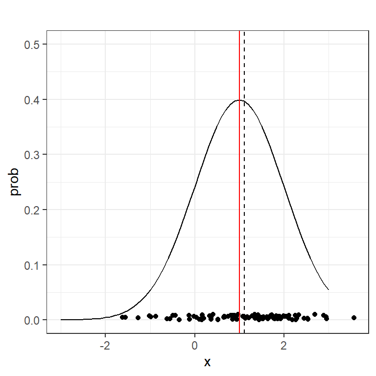
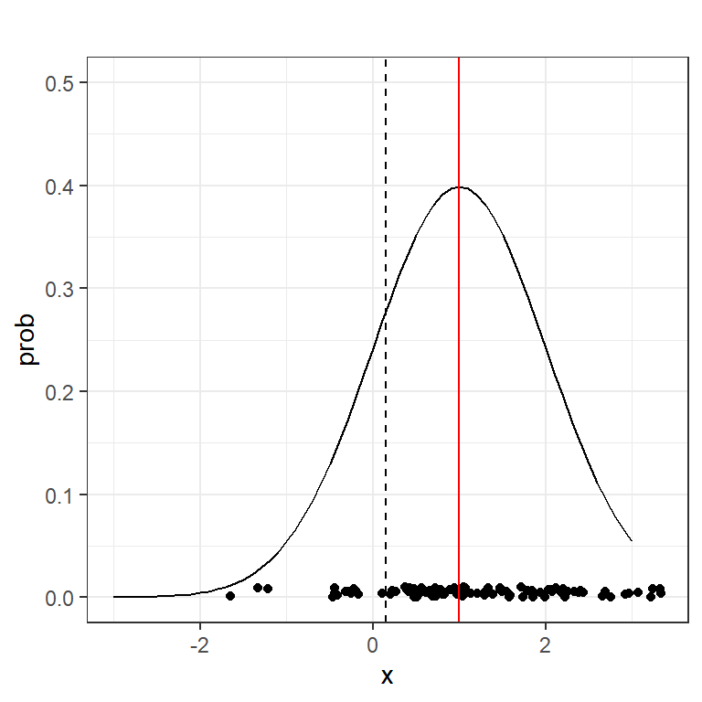
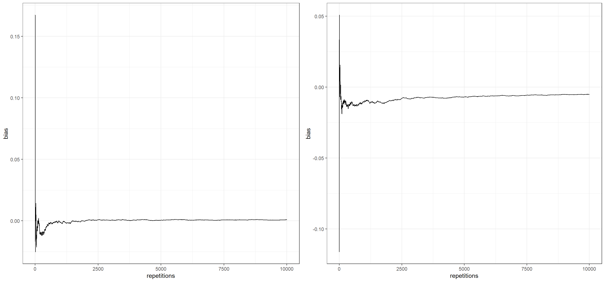
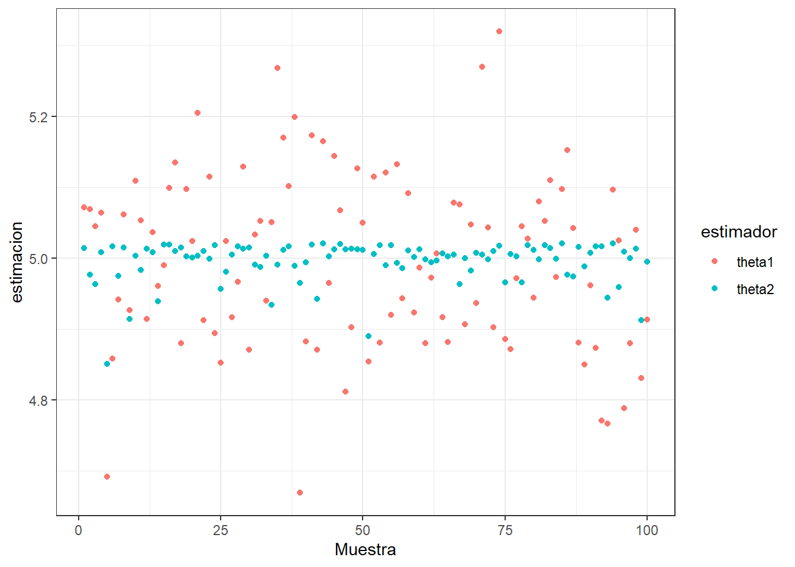

![]()

Estimación Puntual1
¿Qué vamos a discutir hoy?
- Discusión de la práctica.
- Error cuadrático medio y propiedades de los estimadores: insesgado, eficiente, consistente y suficiente.
Propiedades deseadas de un “buen” estimador
Básicamente se resume en la esperanza y la variancia del estimador.

Figura 1. Sesgo y Variancia. Fuente: https://www.slideshare.net/Stratio/lunchlearn-combinacin-de-modelos
Estimador Insesgado
Definición 2.1: Sea \(X_{1}, X_{2}, ... , X_{n}\) una muestra aleatoria tal que la distribución de probabilidad de \(X_j\), \(\forall j\), depende de un parámetro \(\theta\); sea \(\hat{\theta}\) un estimador de \(\theta\). Se dice que \(\hat{\theta}\) es un estimador insesgado de \(\theta\) si cumple que \(E(\hat{ \theta })=\theta\). En el caso contrario se dice que es un estimador sesgado.
Ejemplo: Sea \(X_{1}, X_{2}, ... , X_{n}\) una muestra aleatoria sobre una población con media \(\mu\) y varianza \(\sigma^2\), pruebe que \(\overline{X}\) y \(S^2\) son estimadores insesgados para estimar \(\mu\) y \(\sigma^2\) respectivamente.
Solución: En la diapositva 9 de la clase02, comprobamos que
- \(E\left(\overline{X}\right)=\mu\), y
- \(E\left(S^2\right)=\sigma^2\).
Por lo que podemos concluir que \(\overline{X}\) es insesgado para estimar \(\mu\), y \(S^2\) es insesgado para estimar \(\sigma^2\). Esto para cualquier tipo de población.
Estimador Insesgado
Ejemplo: Sea \(X_{1}, X_{2}, ... , X_{n}\) una muestra aleatoria tal que \(X_{j} \sim Unif\left(0,\theta\right)\), con \(\theta\) desconocido. Un estimador de \(\theta\) es \(\hat{\theta} = X_{\left(n\right)} = \max\left\{ X_{1}, X_{2}, ... , X_{n} \right\}\). Determine si \(X_{\left(n\right)}\) es insesgado.
Solución: Primero, encontramos la distribución de \(\hat{\theta} = X_{\left(n\right)} = \max\left\{ X_{1}, X_{2}, ... , X_{n} \right\}\):
\[\begin{align*} F_{X_{\left(n\right)}}\left(x\right) &= P(X_{(n)} \leq x) \\ &= P(\max(X_1,X_2,⋯,X_n)\leq x) \\ &=P(X_1 \leq x,X_2 \leq x,⋯,X_n\leq x ) \end{align*}\]
Si sabemos por la definición de muestra aleatoria que existe independencia, entonces:
\[P(X_{(n)} \leq x)= \prod_{i=1}^n P(X_i\leq x) =\prod_{i=1}^n F_X( x) = [F_X( x)]^n\]
Estimador Insesgado
Ahora, también conocemos la función de densidad y distribución de una Uniforme \(\left(0,\theta\right)\):
\(f_{X}\left(x\right)=\begin{cases} \frac { 1 }{ \theta } \quad si\quad 0<x<\theta \\ 0\quad en\quad otros\quad casos \end{cases}\)
\(F_{X}\left(x\right)=\begin{cases} 0\quad si \quad x \leq 0 \\ \frac {x}{\theta} \quad si\quad 0<x<\theta \\ 1\quad si\quad x \geq \theta \end{cases}\)
Usando esta información podemos obtener la función de densidad del máximo y con ello su valor esperado.
\[f_{X_{(n)}}(x)= n[F_X(x)]^{n-1}f_X(x)\]
\[f_{X_{(n)}}(x) = n\left[\frac{x}{\theta}\right]^{n-1} \cdot \frac {1}{\theta}=\begin{cases}\frac{nx^{n-1}}{\theta^n} \quad si \quad 0<x<\theta \\ 0 \quad en\quad otros\quad casos \end{cases}\]
Estimador Insesgado
Esta es una distribución que estaremos usando mucho en el transcurso del curso; lleva el nombre de Potencial y en este caso tiene parámetros \(n\) y \(\theta\). Podemos decir que \(X_{\left(n\right)} \sim Potencial\left(n,\theta\right)\).
Estimador Insesgado
De este resultado podemos obtener de una vez la función de distribución de una Potencial, es decir, \(F_{X_{(n)}}(x)=[F_X(x)]^{n}\):
\[F_{X_{(n)}}(x) = \begin{cases} 0\quad si \quad x \leq 0 \\ \left(\frac{x}{\theta}\right)^{n} \quad si\quad 0<x<\theta \\ 1\quad si\quad x \geq \theta \end{cases}\]
Para poder determinar si \(X_{\left(n\right)}\) es insesgado debemos obtener su valor esperado. Esto lo tenemos que hacer por definición pues por el momento desconocemos del valor esperado de una Potencial.
\[\begin{multline*} E(X_{\left(n\right)}) = \int_{0}^{\theta}{xf_{X_{\left(n\right)}}\left(x\right)dx} = \int_{0}^{\theta}{x \cdot \frac{nx^{n-1}}{\theta^n}dx} = \int_{0}^{\theta}{\frac{nx^{n}}{\theta^n}dx} \\ = \frac{n}{\theta^n}\int_{0}^{\theta}{x^{n}dx} = \frac{n}{\theta^n} \cdot \frac{x^{n+1}}{n+1}\Big|_{0}^{\theta} = \frac{n\theta}{n+1} \neq \theta \end{multline*}\]
Podemos concluir que \(X_{\left(n\right)}\) no es un estimador insesgado para \(\theta\).
Estimador Insesgado
NOTA #2: Del resultado de esta integral encontramos que el valor esperado de una Potencial con parámetros \(\alpha\) y \(\beta\) sería \(\frac{\alpha \beta}{\alpha + 1}\) y su función de densidad es:
\[f(x) =\begin{cases}\frac{\alpha x^{\alpha-1}}{\beta^\alpha} \quad si \quad 0<x<\beta \\ 0 \quad en\quad otros\quad casos \end{cases}\]
Estimador Insesgado
Se puede construir un estimador insesgado de \(\theta\) a partir de \(X_{\left(n\right)}\), de modo que \(E(\hat{\theta}^{*}) = \theta\)
Podemos observar que en este caso nuestro estimador insesgado sería \(\hat{\theta}^{*}=\frac{\left(n+1\right)X_{\left(n\right)}}{n}\) ya que si calculamos su valor esperado obtendriamos lo siguiente:
\(\displaystyle E(\hat{\theta}^{*}) = E\left[\frac{\left(n+1\right)X_{\left(n\right)}}{n}\right] = \frac{n+1}{n}E(X_{\left(n\right)}) = \frac{n+1}{n} \cdot \frac{n\theta}{n+1} = \theta\)
Estimador Insesgado
Ejemplo:
Sea \(X_{1}, X_{2}, ... , X_{n}\) una muestra aleatoria tal que \(X_{j} \sim Pareto\left(2,\beta\right)\). Determine si \(X_{\left(1\right)}\) es un estimador insesgado para \(\beta\).
Solución:
Sabemos que las funciones de densidad y distribución de este caso particular de la Pareto vienen dadas por las siguientes expresiones
\(f_{X}\left(x\right) = \begin{cases} \dfrac{2\beta^2}{x^3} \quad si \quad x \geq \beta \\ 0 \quad si \quad x < \beta \end{cases}\)
\(F_{X}\left(x\right) = \begin{cases} 1-\left(\dfrac{\beta}{x}\right)^2 \quad si \quad x \geq \beta \\ 0 \quad si \quad x < \beta \end{cases}\)
Estimador Insesgado
Para obtener el valor esperado del mínimo primero debemos saber cómo se distribuye. Esto lo podemos hacer de la siguiente manera:
Sabemos que la función acumulada del mínimo \(X_{(1)}\) es: \(F_{X_{\left(1\right)}}\left(x\right)= 1−[1−F_X(x)]^n\)
Entonces:
\[\begin{multline*} f_{X_{\left(1\right)}}\left(x\right) = n\left[1-F_{X}\left(x\right)\right]^{n-1}f_{X}\left(x\right) = n\left[1-\left(1-\left(\dfrac{\beta}{x}\right)^2\right)\right]^{n-1}\dfrac{2\beta^2}{x^3} \\ = \dfrac{n\beta^{2n-2}}{x^{2n-2}} \cdot \dfrac{2\beta^2}{x^3} = \begin{cases} \dfrac{2n\beta^{2n}}{x^{2n+1}} & \text{si } x \geq \beta \\ 0 \quad & \text{si } x < \beta \end{cases} \end{multline*}\]
Podemos decir que \(X_{\left(1\right)} \sim Pareto\left(2n, \beta\right)\).
Estimador Insesgado
Como ya sabemos el valor esperado de una Pareto, no es necesario integrar. Para una \(Pareto\left(\alpha,\beta\right)\) su valor esperado es \(\frac{\alpha \beta}{\alpha - 1}\). Por lo tanto,
\(E(X_{\left(1\right)}) = \frac{2n\beta}{2n-1} \neq \beta\)
Por lo tanto, \(X_{\left(1\right)}\) no es un estimador insesgado para \(\beta\).
Tarea: Prueben que \(\hat{\beta}^{*} = \frac{2n-1}{2n}X_{\left(1\right)}\) sí es un estimador insesgado para \(\beta\).
Sesgo y Varianza
Figura 1. Sesgo y Varianza. Fuente: https://www.slideshare.net/Stratio/lunchlearn-combinacin-de-modelos
Sesgo y Varianza
Definición 2.2: Error y Sesgo. La diferencia entre un estimador \(\hat{\theta}\) y el parámetro que estima \(\theta\) se considera ERROR en la estimación \(error = \hat{\theta} - \theta\)
No obstante, si \(\hat{\theta}\) es insesgado se tiene que el valor esperado del error es cero: \(E\left(error\right) = E\left(\hat{\theta} - \theta\right) = E(\hat{\theta}) - \theta = 0\). Esto significa que las estimaciones varian alrededor de \(\theta\) en igual proporción para diferentes muestras.
Sin embargo, si \(E(\hat{\theta}) \neq \theta\) se dice que hay un SESGO en la estimación. Este sesgo se ve representado por el valor
\[B(\hat{\theta}) = E(\hat{\theta}) - \theta\]
Sesgo y Varianza
Ejemplo: Encuentre el sesgo para los ejemplos anteriores.
Solución:
- (Caso Uniforme) Sabemos que \(E(X_{\left(n\right)}) = \frac{n\theta}{n+1}\), por lo que tenemos
\[B(\hat{\theta}) = E(X_{\left(n\right)}) - \theta = \frac{n\theta}{n+1} - \theta = \frac{-\theta}{n+1}\]
Podemos notar como el sesgo es negativo. Esto significa que \(X_{\left(n\right)}\) está sub-estimando el valor real de \(\theta\), lo cual es de esperar con el máximo muestral.
- (Caso Pareto) En este caso obtuvimos que \(E(X_{\left(1\right)}) = \frac{2n\beta}{2n-1}\), por lo tanto
\[B(X_{\left(1\right)}) = E(X_{\left(1\right)}) - \beta = \frac{2n\beta}{2n-1} - \beta = \frac{\beta}{2n-1}\]
En este caso el sesgo es positivo, indicando que el estimador está sobre-estimando el valor real de \(\beta\), lo cual es usual al utilizar el mínimo muestral.
Estimadores asintóticamente insesgados
Definición 2.3: Estimadores asintóticamente insesgados. Algunos estimadores, aunque no son insesgados, cumplen que \(\displaystyle \lim_{n \to +\infty}{B(\hat{\theta})} =0\), es decir, el sesgo tiende a cero cuando n tiende a infinito. A estos estimadores se les llama asintóticamente insesgados.
Ejemplo. Determine si los estimadores de los últimos dos ejemplos son asintóticamente insesgados para sus respectivos parámetros.
Solución:
(Caso uniforme)\(\displaystyle\lim_{n \to +\infty}{B(X_{\left(n\right)})} = \lim_{n \to +\infty}{\frac{-\theta}{n+1}} = 0\)
(Caso Pareto)\(\displaystyle\lim_{n \to +\infty}{B(X_{\left(1\right)})} = \lim_{n \to +\infty}{\frac{\beta}{2n-1}} = 0\)
Se cumple que ambos estimadores son asintóticamente insesgados para sus respectivos parámetros.
Insesgamiento asintótico
NOTA: También se cumple que un estimador \(\hat{\theta}\) es asintóticamente insesgado para \(\theta\) si \(\displaystyle\lim_{n\rightarrow\infty}{E(\hat{\theta})} = \theta\).
Insesgamiento asintótico
Ejemplo: En las siguientes dos figuras muestran \(n = 100\) puntos muestrales para una población infinita con \(N(\mu = 1,\sigma^2=1)\), con la densidad y la media en rojo, pero con:
- la media muestral estimada con \(\bar{X}=1.1176\)
- la log media estimada \(log(\bar{X})=0.145\)
- \(log(\mu)=0\)

Sesgo asintótico
Error Cuadrático Medio (ECM)
Definicion 2.4: Error cuadrático medio. Supongamos que \(\hat{\theta}\) es un estimador de un parámetro \(\theta\), se define el error cuadrático medio de \(\hat{\theta}\), denotado por \(ECM(\hat{\theta}) = E\left[\left(\hat{\theta}-\theta\right)^2\right]\)
Teorema 2.1: Si \(\hat{\theta}\) es un estimador de \(\theta\), entonces \(ECM(\hat{\theta}) = Var(\hat{\theta}) + \left[B(\hat{\theta})\right]^2\)
Prueba: \[\begin{align*} & ECM(\hat{\theta}) = E\left[\left(\hat{\theta}-\theta\right)^2\right] = E\left[\left(\left[\hat{\theta} - E(\hat{\theta})\right] + \left[E(\hat{\theta}) - \theta \right]\right)^2\right] \\ &= E\left[\left(\left[\hat{\theta} - E(\hat{\theta})\right] + B(\hat{\theta})\right)^2\right] = \small E\left[\left(\hat{\theta} - E(\hat{\theta})\right)^{2} + 2\left(\hat{\theta} - E(\hat{\theta})\right)B(\hat{\theta}) +B(\hat{\theta})^{2}\right] \\ &= E\left[\left(\hat{\theta} - E(\hat{\theta})\right)^{2}\right] + 2B(\hat{\theta}) E\left(\hat{\theta} - E(\hat{\theta})\right) + B(\hat{\theta})^{2} \\ &= Var(\hat{\theta}) + 2B(\hat{\theta}) \cdot 0 + B(\hat{\theta})^{2} = Var(\hat{\theta}) + B(\hat{\theta})^{2} \end{align*}\]
Sesgo y ECM
NOTA: Si un estimador \(\hat{\theta}\) es insesgado para \(\theta\) se cumple que \(ECM(\hat{\theta}) = Var(\hat{\theta})\).
Error Cuadrático Medio
Ejemplo:
Si \(X_{1}, X_{2}, ... , X_{n}\) es una muestra aleatoria tal que \(X_{j} \sim Pareto \left(2,\beta\right)\) y \(X_{\left(1\right)}\) es un estimador de \(\beta\), determine el error cuadrático medio de \(X_{\left(1\right)}\).
Solución:
Se demostró que \(X_{(1)} \sim Pareto\left(2n,\beta\right)\) y que \(B\left(X_{\left(1\right)}\right) = \frac{\beta}{2n-1}\). También sabemos que \(Var\left(X_{\left(1\right)}\right) = \frac{2n\beta^{2}}{\left(2n-1\right)^{2}\left(2n-2\right)}\). Por lo tanto,
\(ECM(X_{\left(1\right)}) = Var(X_{\left(1\right)}) + B(X_{\left(1\right)})^{2}\)
\(~~~~~~~~~~~~~~~~~~~~~=\frac{2n\beta^{2}}{\left(2n-1\right)^{2}\left(2n-2\right)} + \frac{\beta^2}{\left(2n-1\right)^2} = \frac{4n\beta^{2} - 2\beta^{2}}{\left(2n-1\right)^{2}\left(2n-2\right)} = \frac{\beta^2}{\left(2n-1\right)\left(n-1\right)}\)
Eficiencia
La eficiencia de un estimador está relacionada con la variabilidad de dicho estimador, la cual se ve representada por el error cuadrático medio. Empezaremos con un ejemplo que compare la variabilidad entre dos estimadores:
Ejemplo: Sea \(X_{1}, X_{2}, ... , X_{n}\) una muestra aleatoria tal que
\(F_{X}(x) = \begin{cases} 0 \quad si \quad x < 0 \\ \left(\frac{x}{\theta}\right)^{5} \quad si \quad 0 \leq x \leq \theta \\ 1 \quad si \quad x > \theta \end{cases}\)
\(i.\) Sean \(\overline{X}\) y \(X_{(n)}\) dos estimadores de \(\theta\). ¿Cuál de ellos tiene el menor error cuadrático medio?
Solución: Podemos reconocer que \(X_{j} \sim Potencial\left(5,\theta\right)\). Sabemos que para una variable aleatoria \(Y\) tal que \(Y \sim Potencial\left(\alpha, \beta\right)\) su valor esperado y varianza vienen dados por
\(E(Y) = \frac{\alpha\beta}{\alpha+1} \qquad Var(Y) = \frac{\alpha \beta^{2}}{\left(\alpha+1\right)^{2}\left(\alpha+2\right)}\)
Eficiencia
Empezando por \(\overline{X}\) tenemos lo siguiente,
\(E(\overline{X}) = E(X) = \frac{5\theta}{6}\)
\(\Rightarrow B(\overline{X}) = \frac{5\theta}{6} - \theta = \frac{-\theta}{6}\)
\(Var(\overline{X}) = \frac{Var(X)}{n} = \frac{5\theta^{2}}{252n}\)
\(\Rightarrow ECM(\overline{X}) = Var(\overline{X}) + B(\overline{X})^{2} = \frac{5\theta^{2}}{252n} + \frac{\theta^2}{36} = \frac{\theta^{2}\left(5+7n\right)}{252n}\)
Procedemos a obtener el error cuadrático medio de \(X_{(n)}\) pero, primero hay que encontrar cómo se distribuye este estimador,
\(F_{X_{\left(n\right)}}\left(x\right) = \left[F_{X}\left(x\right)\right]^{n} = \left[\left(\frac{x}{\theta}\right)^{5}\right]^{n} = \left(\frac{x}{\theta}\right)^{5n}\)
Eficiencia
Podemos reconocer con esto que \(X_{(n)} \sim Potencial\left(5n,\theta\right)\). Ya con esto podemos proceder a obtener la información que necesitamos para el error cuadrático medio:
\[E(X_{(n)}) = \frac{5n\theta}{5n+1}\]
\(\Rightarrow B(X_{(n)}) = \frac{5n\theta}{5n+1} - \theta = \frac{-\theta}{5n+1}\)
\(Var(X_{(n)}) = \frac{5n\theta^2}{\left(5n+1\right)^{2}\left(5n+2\right)}\)
\(\Rightarrow ECM(X_{(n)}) = \frac{5n\theta^2}{\left(5n+1\right)^{2}\left(5n+2\right)} + \frac{\theta^2}{\left(5n+1\right)^{2}} = \frac{10n\theta^{2} + 2\theta^{2}}{\left(5n+1\right)^{2}\left(5n+2\right)} = \frac{2\theta^2}{\left(5n+1\right)\left(5n+2\right)}\)
Observando ambos resultados concluimos que \(ECM(\overline{X}) > ECM(X_{(n)}), \quad \forall n > 1\).
Eficiencia
\(ii.\) Encontrar dos estimadores insesgados, \(\hat{\theta}_{1}\) y \(\hat{\theta}_{2}\), a partir de \(\overline{X}\) y \(X_{(n)}\) respectivamente. ¿Cuál de ellos tiene menor variabilidad?
Solución: Podemos notar que los estimadores insesgados serían los siguientes:
\(\hat{\theta}_{1} = \frac{6\overline{X}}{5} \qquad \qquad \hat{\theta}_{2} = \frac{5n+1}{5n}X_{(n)}\)
\(Var(\hat{\theta}_{1}) = Var\left(\frac{6\overline{X}}{5}\right) = \frac{36}{25}Var(\overline{X}) = \frac{36}{25} \cdot \frac{5\theta^{2}}{252n} = \frac{\theta^2}{35n}\)
\[\begin{align*} Var(\hat{\theta}_{2}) &= Var\left(\frac{5n+1}{5n}X_{(n)}\right) = \frac{\left(5n+1\right)^2}{25n^2}Var(X_{(n)}) \\ &= \frac{\left(5n+1\right)^2}{25n^2} \cdot \frac{5n\theta^2}{\left(5n+1\right)^{2}\left(5n+2\right)} = \frac{\theta^2}{5n\left(5n+2\right)} \end{align*}\]
Eficiencia
En este caso \(\frac{\theta^2}{5n\left(5n+2\right)} < \frac{\theta^2}{35n} \forall n > 1\).
Se dice que \(\hat{\theta}_{2}\) es relativamente más eficiente que \(\hat{\theta}_{1}\).
NOTA: En general, si se tienen dos estimadores insesgados de un parámetro \(\theta\), es más eficiente aquel que tiene menor varianza. Si se comparan estimadores sesgados se comparan los errores cuadráticos medios en lugar de las variancias.
Definicion 2.5: Eficiencia relativa. Si \(\hat{\theta}_{1}\) y \(\hat{\theta}_{2}\) son estimadores insesgados de un parámetro \(\theta\), se define la eficiencia relativa de \(\hat{\theta}_{1}\) con respecto a \(\hat{\theta}_{2}\): \(eff(\hat{\theta}_{1},\hat{\theta}_{2}) = \frac{Var(\hat{\theta}_{2})}{Var(\hat{\theta}_{1})}\)
En el ejemplo anterior:
\(eff(\hat{\theta}_{1},\hat{\theta}_{2}) = \frac{\frac{\theta^2}{5n\left(5n+2\right)}}{\frac{\theta^2}{35n}} = \frac{7}{5n+2} < 1 \quad \forall n>1\)
Esto significa que \(\hat{\theta}_{2}\) es más eficiente que \(\hat{\theta}_{1}\).
Eficiencia
En la siguiente figura, se observa \(\hat{\theta}_1\) y \(\hat{\theta}_2\) calculados de 100 muestras independientes. En dicha simnulación, se supone que \(\theta=5\) y \(n=45\). Podemos observar como la eficiencia de los dos estimadores.
Eficiencia
En general, para buscar la eficiencia al estimar un parámetro se requiere determinar el estimador insesgado \(\hat{\theta}\) que tiene variancia mínima.
Teorema 2.2:. Desigualdad de Cramer-Rao. Sea \(X_{1}, X_{2}, ... , X_{n}\) una muestra aleatoria sobre una población con parámetro desconocido \(\theta\) con función de densidad \(f_{X}(x|\theta)\), cuyo dominio no depende de \(\theta\). Si \(\hat{\theta}\) es un estimador insesgado para \(\theta\), entonces en general: \[Var(\hat{\theta}) \geq \frac{1}{I(\theta)},\] donde \(I(\theta)\) se llama la información de Fisher y se define como \(I(\theta) = \left[nE\left(-\frac{\partial^{2}\ln(f_{X}(x))}{\partial \theta^{2}}\right)\right]\).
- Si \(Var(\hat{\theta}) = 1/I(\theta)\) entonces \(\hat{\theta}\) es un estimador insesgado de variancia mínima para \(\theta\).
Eficiencia
Ejemplo: Sea \(X_{1}, X_{2}, ... , X_{n}\) una muestra aleatoria de una población Normal con media \(\mu\) y variancia \(\sigma^{2}\). Demuestre que \(\overline{X}\) es un estimador insesgado de variancia mínima (EIVM) para \(\mu\).
Solución: Ya sabemos de ejemplos anteriores que \(\overline{X}\) es insesgado para \(\mu\). Hay que demostrar que es de variancia mínima utilizando la desigualdad de Cramer-Rao.
Sabemos que en este caso \(f_{X}(x) = \frac{1}{\sqrt{2\pi}\sigma}e^{-\frac{(x-\mu)^2}{2\sigma^2}}\).
\(\Rightarrow \ln(f_{X}(x)) = \ln\left(\frac{1}{\sqrt{2\pi}\sigma}\right) - \frac{(x-\mu)^2}{2\sigma^2} \Rightarrow \frac{\partial\ln(f_{X}(x))}{\partial\mu} = \frac{x-\mu}{\sigma^{2}}\)
\(\Rightarrow \frac{\partial^{2}\ln(f_{X}(x))}{\partial\mu^{2}} = \frac{-1}{\sigma^2} \Rightarrow -\frac{\partial^{2}\ln(f_{X}(x))}{\partial\mu^{2}} = \frac{1}{\sigma^2}\)
\(\Rightarrow I^{-1}(\mu) = \left[nE\left(-\frac{\partial^{2}\ln(f_{X}(x))}{\partial \mu^{2}}\right)\right]^{-1} = \left[ \frac{n}{\sigma^2}\right]^{-1} = \frac{\sigma^2}{n}\)
De antemano ya sabiamos que \(Var(\overline{X}) = \frac{\sigma^2}{n}\) que como vemos es igual a la información de Fisher para \(\mu\), por lo que podemos concluir que \(\overline{X}\) es un estimador insesgado de variancia mínima para \(\mu\).
Ejercicios
- Sea \(X_1, . . . , X_n\) denote una variable aleatoria que se distribuye como Uniforme \((0, \theta)\), con \(\theta >0\) es un parámetro desconocido. Denote \(\bar{X}\) como la media muestral.
¿Es \(\bar{X}\) un estimador insesgado para \(\theta\)? Explique su respuesta.
Encuentre un estimador insesgado para \(\theta\).
Encuentre la variancia del estimador de la parte anterior.
Sugiera un estimador alternativo para \(\theta\).
Ejercicios
- Sean \(X_1, . . . , X_n, X_{n + 1}, . . . , X_{n+m}\) variables aleatorias independientes e idénticamente distribuidas con densidad Normal de media \(\mu\) y varianza \(\sigma^2_X\). Se desea estimar \(\mu\), pero los valores individuales de las variables se han extraviado y se dispone sólo de las medias:
\[\bar{X_1}=\frac{1}{n}\sum_{i=1}^{n}X_i,~~~ \bar{X_2}=\frac{1}{m}\sum_{i=n+1}^{n+m}X_i\]
Para integrar las dos fuentes de información se utiliza un estimador de la forma \(\hat{X} = \lambda \bar{X_1} + (1 − \lambda)\bar{X_2}\), donde \(0 \leq \lambda \leq 1\). Probar que un estimador de este tipo es insesgado para \(\mu\) indicando además qué valor define el mejor \(\lambda\) de todos ellos.
Ejercicios
Sea \(X_1,\dots, X_n\sim \text{Poisson}(\theta)\). Muestre que \(\bar X_n\) es un estimador eficiente de \(\theta\). Es decir, compruebe que la varianza de \(\bar X_n\) es igual a su Cota de Cramer-Rao
\[\begin{equation*} f(x \vert \lambda)=\operatorname{Pr}(X=x)=\frac{\lambda^{x} e^{-\lambda}}{x !} \end{equation*}\]
¿Qué discutimos hoy?
ECM y propiedades de los estimadores: insesgado, eficiente.
Práctica en grupos.
Próxima clase: consistente y suficiente.